Many Variables (Part 1)
EES 4891-06/5891-01
Bayesian Statistical Methods
Jonathan Magnolia Gilligan
Class #6: Monday, January 26 2026
Outline of Regression Modeling
Outline of Regression Modeling
-
Develop a formula relating outcome variable (\(y\)) to predictor variables (\(x_1\), \(x_2\), …)
\[ \begin{align} y &\sim \text{Normal}(\mu, \sigma) \\ \mu &= \alpha + \beta x \end{align} \]
- You can use theory and/or exploratory analysis of your actual data.
-
Develop priors for parameters
\[ \begin{align} \alpha &\sim \text{Normal}(178, 20) \\ \beta & \sim \text{Normal}(0, 10) \\ \sigma &\sim \text{Exponential}(1) \end{align} \]
- Use theory
- Check using prior predictions:
- Does applying priors to formulas make reasonable predictions
- Fit model:
- Combine formulas, priors, and observed data to produce posterior probability distributions of parameters
- Prior represents what you knew about the parameters before getting the new data.
- Posterior reflects your improved knowledge about parameters after incorporating new observations.
- Check model:
- Compare posterior predictions to your observed data.
- Covariance among posteriors for different parameters may indicate a problem with your formulas.
Checking Models
Checking fit
- Sample \(a\) and \(b\) from the posterior
- Plot a line with the median slope and intercept
- Plot the original data
post <- extract.samples(lin_mdl)
map <- summarize(post, a = median(a), b = median(b))
map_line <- tibble(weight = range(d2$weight),
height = map$a +
map$b * (weight - wbar))
ggplot(d2, aes(x = weight, y = height)) +
geom_line(data = map_line, size = 1, color = "black") +
geom_point(size = 2, color = "darkblue", alpha = 0.2) +
labs(x = "weight (kg)", y = "height (cm)")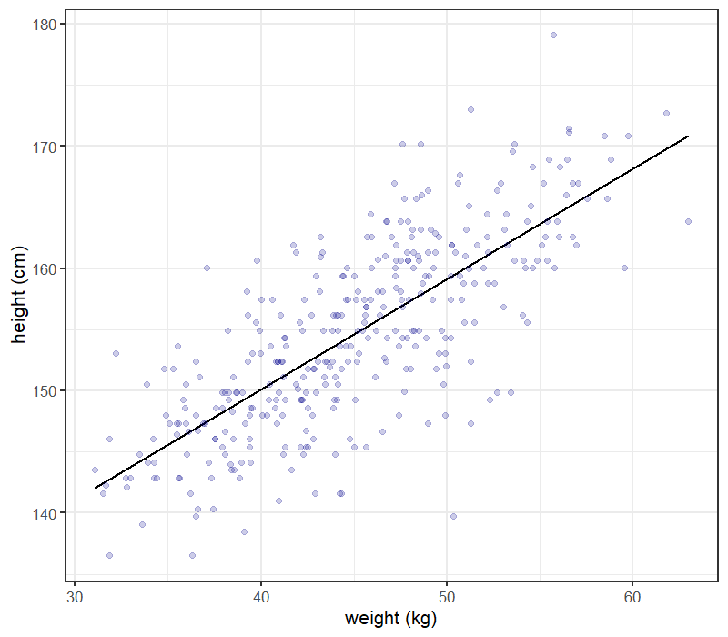
Fit Subsets of Data
f <- function(N) {
dN <- slice_head(d2, n = N)
mN <- quap(flist_lin, data = dN)
post <- extract.samples(mN, n = 20)
map_line <- post |> mutate(index = seq(n())) |>
cross_join(tibble(weight = range(d2$weight))) |>
mutate(height = a + b * (weight - wbar))
ggplot(dN, aes(x = weight, y = height)) +
geom_point(size = 3, color = "darkblue", alpha = 1.5 / log(N)) +
geom_line(data = map_line, mapping = aes(group=index),
color = "black", alpha = 0.3) +
labs(x = "weight (kg)", y = "height (cm)",
title = str_c("N = ", N))
}
library(patchwork)
p1 <- f(10)
p2 <- f(50)
p3 <- f(150)
p4 <- f(nrow(d2))
p1 + p2 + p3 + p4 + plot_layout(ncol = 2)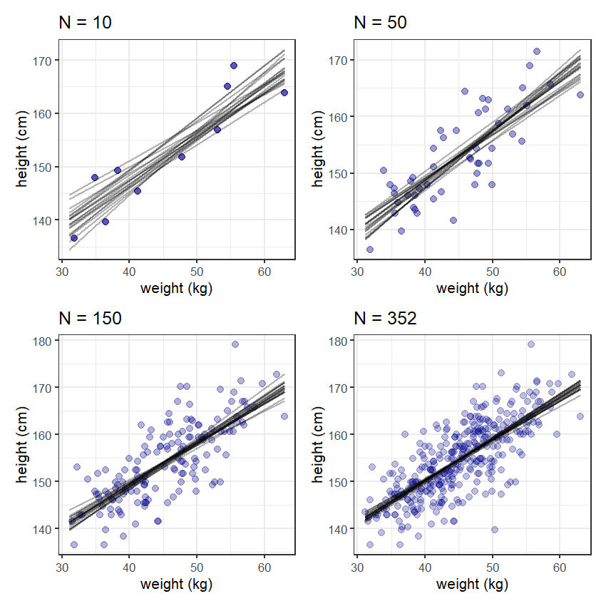
Compatibility Intervals
new_data <- tibble(weight = seq(25, 70, 1))
post <- linpred_draws(lin_mdl, new_data, value = "height")
post_sum <- summarize(post, lower = quantile(height, 0.055),
upper = quantile(height, 0.945),
height = mean(height))
p1 <- ggplot(slice_head(post, n = 100), aes(x = weight, y = height)) +
geom_point(size = 2, alpha = 0.02, color = "darkblue") +
labs(x = "weight (kg)", y = "height (cm)")
p2 <- ggplot(d2, aes(x = weight, y = height)) +
geom_point(size = 2, color = "darkblue", alpha = 0.3) +
geom_smooth(data = post_sum, aes(ymin = lower, ymax = upper),
stat = "Identity",
color = "darkgreen", fill = "darkgreen", alpha = 0.2) +
labs(x = "weight (kg)", y = "height (cm)")
p1 + p2 + plot_layout(nrow = 2)- The top graph shows samples of 100 points drawn from the posterior predictions of \(\mu\)
- The bottom shows the actual data together with the best-fit line, and the 89% compatibility interval for the line
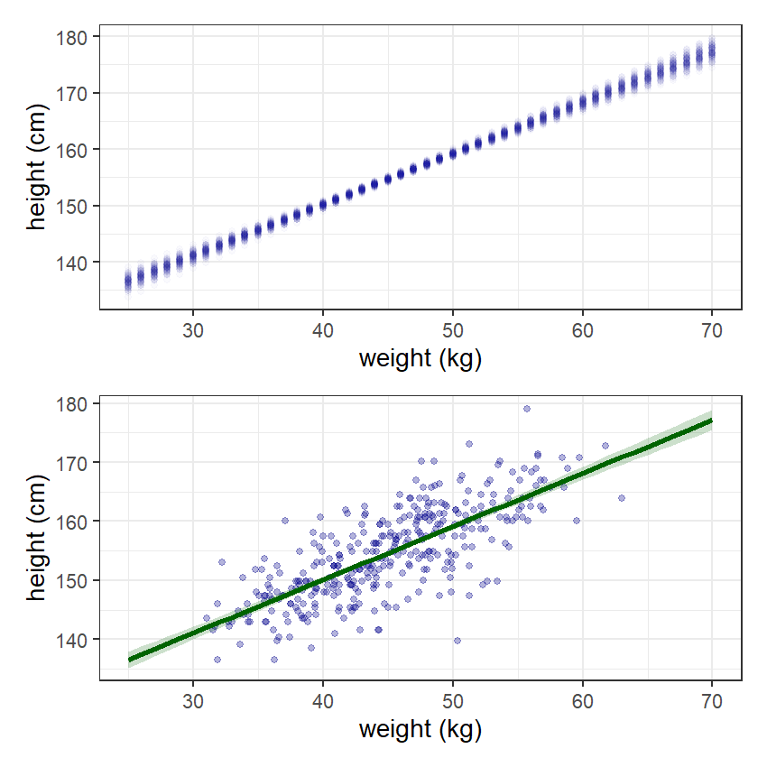
Checking predictions
post <- predicted_draws(lin_mdl, new_data, value = "height")
post_sum <- summarize(post, lower = quantile(height, 0.055),
upper = quantile(height, 0.945),
height = mean(height))
p2 <- ggplot(d2, aes(x = weight, y = height)) +
geom_ribbon(data = post_sum, aes(ymin = lower, ymax = upper),
fill = "darkgreen", alpha = 0.2) +
geom_line(data = post_sum, size = 2, color = "darkgreen") +
geom_point(size = 2, color = "darkblue", alpha = 0.3) +
labs(x = "weight (kg)", y = "height (cm)")
p2- The graph shows the observed data and the 89% compatibility interval
for predictions of where we will see data points.
- 89% of the data should lie within this interval.
-
linpred_drawssamples from posterior for \(\mu = \alpha + \beta x\) -
predicted_drawssamples from posterior for \(y \sim \text{Normal}(\mu, \sigma)\)
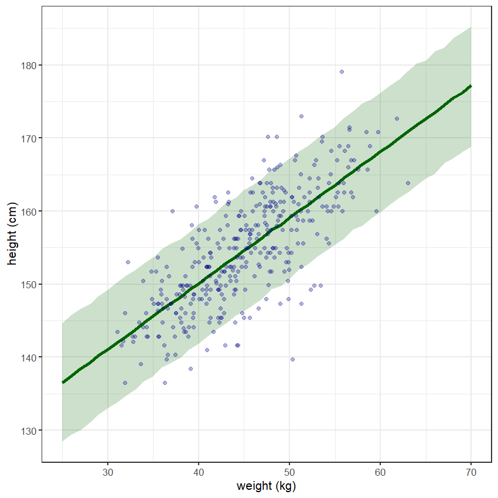
Beyond Linear Models
Beyond Linear Models
- Sometimes linear models aren’t good enough.
- If we include children, height is no longer a linear function of weight.
- Polynomial models (quadratic, cubic, etc.) may be better.
- High powers of variables can get large, so standardize your data \[ x_s = \frac{x - \bar x}{\sigma_x},\] where \(\bar x\) is the mean of \(x\) and \(\sigma_x\) is the standard deviation.
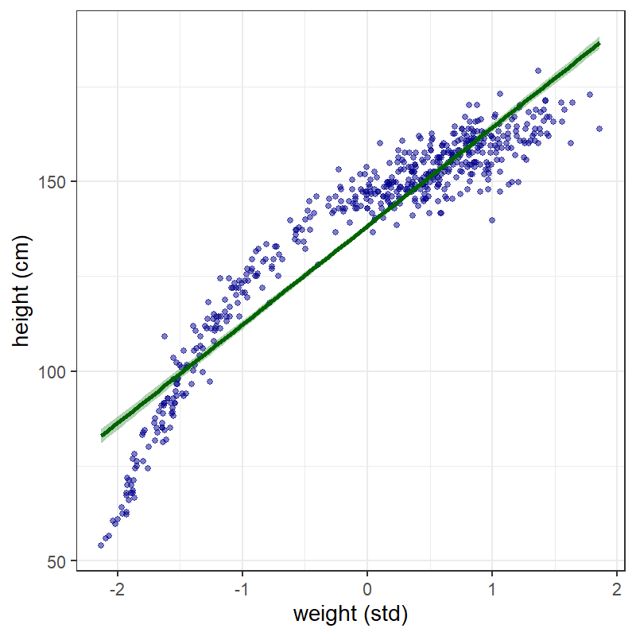
Polynomial Regression
-
Model:
\[ \begin{align} h &\sim \text{Normal}(\mu, \sigma) \\ \mu &= \alpha + \beta_1 w_s + \beta_2 w_s^2 \\ \alpha &\sim \text{Normal}(178,20) \\ \beta_1 &\sim \text{Log-Normal}(0,1) \\ \beta_2 &\sim \text{Normal}(0, 1) \\ \sigma &\sim \text{Uniform}(0,50) \end{align} \]
- $w_s = $ standardized weight
- For computational efficiency, make a new variable \(ws2 = ws^2\).
d_std <- mutate(d, ws = (weight - mean(weight)) / sd(weight),
ws2 = ws^2)
flist_lin_s <- alist(
height ~ dnorm(mu, sigma),
mu <- a + b * ws,
a ~ dnorm(178, 20),
b ~ dlnorm(0,1),
sigma ~ dunif(0,50)
)
lin_mdl_s <- quap(flist_lin_s, data = d_std)
flist_quad_s <- alist(
height ~ dnorm(mu, sigma),
mu <- a + b1 * ws + b2 * ws2,
a ~ dnorm(178, 20),
b1 ~ dlnorm(0,1),
b2 ~ dnorm(0,1),
sigma ~ dunif(0,50)
)
quad_mdl_s <- quap(flist_quad_s, data = d_std)
precis(quad_mdl_s)## mean sd 5.5% 94.5%
## a 146.057333 0.3689800 145.467632 146.647035
## b1 21.733305 0.2888932 21.271598 22.195012
## b2 -7.802983 0.2741888 -8.241189 -7.364776
## sigma 5.774541 0.1764705 5.492507 6.056575Different polynomials
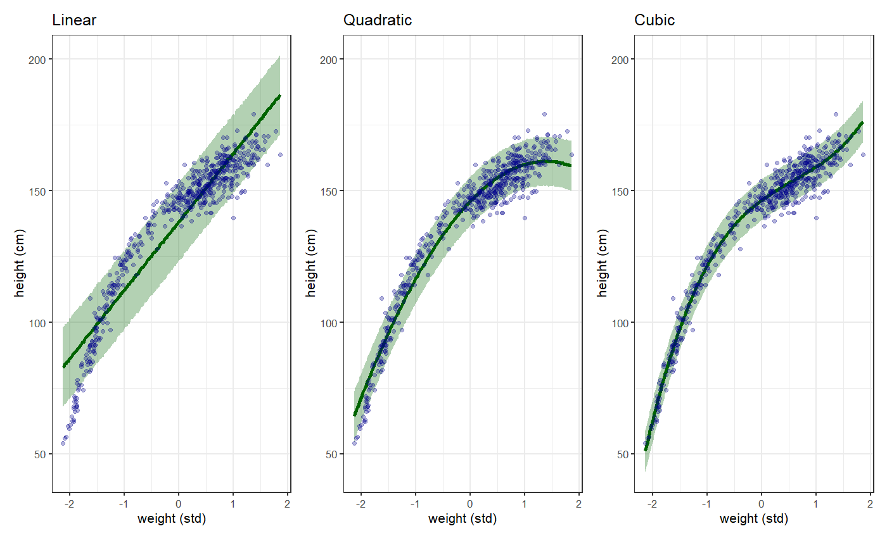
Nonparametric Models
Splines
- Originally from mechanical drafting splines
- Arbitrary smooth curve
- Complexity:
- Physical splines: “ducks” or “whales”
- Mathematical splines: “knots”
- Splines are a special case of a class of models called generalized additive models (GAMs).


Splines in Statistical Regression
- Cherry blossom data
- Over 1000 years of historical records of cherry tree blossoming dates
- No changes for most of history, but pronounced trend in 20th century (global warming).
- Spline regression:
-
Basis splines: for the \(i\)th point, \(x_i\) \[
\mu_i = \alpha + \sum_{j = 1}^{n_{\text{knots}}} w_j B_{i,j} \\
\] \(n_{\text{knots}}\) = #
knots, \(w_j\) = weight for knot \(j\),
\(B_{i,j}\) = \(i\)th row of \(j\)th basis function (matrix with one row for each \(x\) value, and \(n_{\text{knots}}\) columns).
-
Basis splines: for the \(i\)th point, \(x_i\) \[
\mu_i = \alpha + \sum_{j = 1}^{n_{\text{knots}}} w_j B_{i,j} \\
\] \(n_{\text{knots}}\) = #
knots, \(w_j\) = weight for knot \(j\),
## 'data.frame': 1215 obs. of 5 variables:
## mean sd 5.5% 94.5% histogram
## year 1408.00 350.88 867.77 1948.23 ▇▇▇▇▇▇▇▇▇▇▇▇▁
## doy 104.54 6.41 94.43 115.00 ▁▂▅▇▇▃▁▁
## temp 6.14 0.66 5.15 7.29 ▁▃▅▇▃▂▁▁
## temp_upper 7.19 0.99 5.90 8.90 ▁▂▅▇▇▅▂▂▁▁▁▁▁▁▁
## temp_lower 5.10 0.85 3.79 6.37 ▁▁▁▁▁▁▁▃▅▇▃▂▁▁▁Linear Basis Spline
- Linear basis functions \(B_j(x)\)
- 5 knots
- Piecewise linear
- At most 2 functions are nonzero for any \(x\).
- Model fits weights \(w_j\) for each basis function

Cubic Basis Spline
- 15 knots
- Equal # of years with data between knots.
- Cubic functions
- Only 3 have nonzero values for any \(x\).
library(splines)
d2 <- filter(d, ! is.na(doy)) # omit missing values
n_knots <- 15
knot_list <- quantile(d2$year,
probs=seq(0,1, length.out = n_knots))
# Create basis function matrix
B <- bs(d2$year, knots = knot_list[-c(1,n_knots)],
degree = 3, intercept = TRUE)
mdl <- quap(
alist(
D ~ dnorm(mu, sigma),
mu <- a + B %*% w,
a ~ dnorm(100, 10),
w ~ dnorm(0, 10),
sigma ~ dexp(1)
),
data = list(D = d2$doy, B = B),
start = list(w = rep(0, ncol(B)))
)-
%*%means matrix multiplication

Multiple Regression
Multiple Regression
- Single Regression:
- Dependent variable depends on one independent (predictor) variable
- Multiple Regression:
- Dependent variable depends on multiple independent variables.
- Why use Multiple Regression?
- Statistical controls for confounding effects
- On average, men are taller than women
- Studies of how income correlates with height should control for sex.
- Statistical controls for confounding effects
- Why use Multiple Regression? (cont.)
- Multiple causes and complex causation
- Earth’s temperature depends on
- Greenhouse gas concentrations
- Albedo (reflection of sunlight)
- Brightness of the sun
- Earth’s temperature depends on
- Interactions (Chapter 8)
- Smoking increases risk of lung cancer
- Exposure to radon increases risk of lung cancer
- The effect of radon is much greater among smokers
- Multiple causes and complex causation
Spurious Association
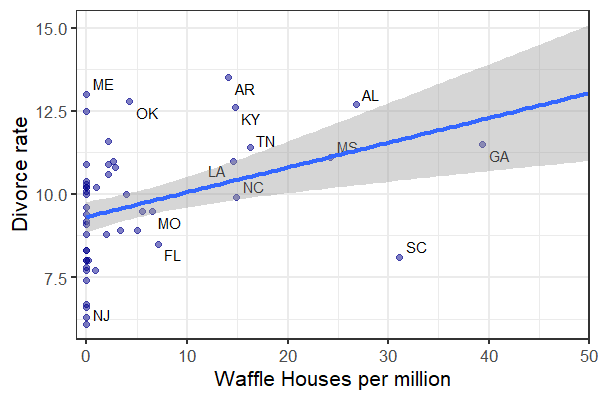
- Does the presence of Waffle House restaurants cause married couples to get divorced?
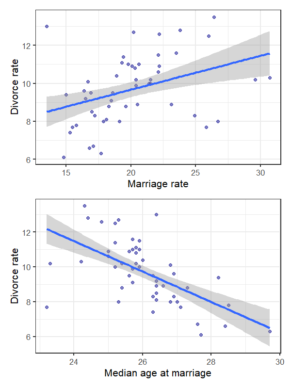
Standardize Data
- Model \[ \begin{align} D_i &\sim \text{Normal}(\mu_i, \sigma) \\ \mu_i &= \alpha + \beta_A A_i \\ \alpha &\sim \text{Normal}(0, 0.2) \\ \beta_A &\sim \text{Normal}(0, 0.5) \\ \sigma &\sim \text{Exponential}(1) \end{align} \]
Causal Relationships
- Think before you regress
The pattern we see here is typical when one variable influences the dependent variable and also the other independent variable.
-
Two possible causal relationships


Which is it?


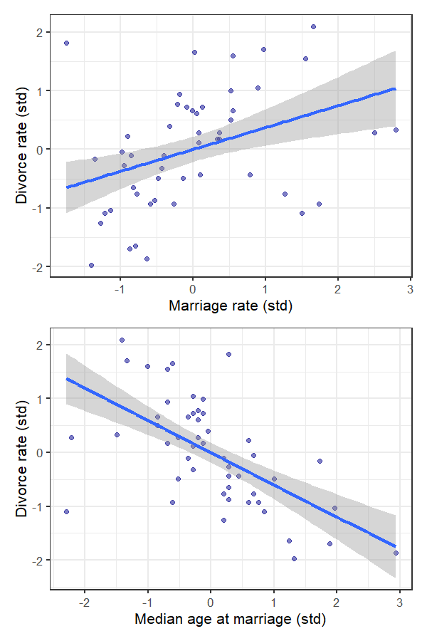
Testable Implications
-
What are the possible testable implications of these DAGs?


-
Conditional independencies:
- Which variables should be associated in the data?
- Which variables become dis-associated when we condition on another set of variables
- Conditioning: Y is independent of X, conditioned on Z (\(Y \indep X | Z\)) if X doesn’t give us any additional information about Y when we already know Z.
- Left DAG: There shouldn’t be any independence among D, A, and M.
- Right DAG: \(D \indep M | A\).
Multiple Regression Models
Multiple Regression Notation
\[ \begin{align} D_i &\sim \text{Normal}(\mu_i, \sigma) \\ \mu_i &= \alpha + \beta_M M_i + \beta_A A_i \\ \alpha &\sim \text{Normal}(0,0.2) \\ \beta_M &\sim \text{Normal}(0,0.5) \\ \beta_A &\sim \text{Normal}(0,0.5) \\ \sigma &\sim \text{Exponential}(1) \\ \end{align} \]
Comparing Models
- In the multiple model, bM is consistent with
zero:
- If we know the median age A,
- we get no additional information from knowing the marriage rate M.
- \(D \indep M | A\)
Diagnostic Posterior Plots
Diagnostic Posterior Plots
- We can also learn from plotting the posterior in different ways.
-
Predictor residual plots: Data versus residual
predictor values.
- These are only useful for understanding the model itself.
-
Posterior prediction plots: Predictions versus raw
data.
- Useful for checking how well the model fits the data.
- Don’t tell us about causal relationships.
-
Counterfactual plots: Implied predictions for
imaginary experiments.
- Useful for exploring causal implications.
-
Predictor residual plots: Data versus residual
predictor values.
Predictor Residual Plots
library(ggrepel)
ggplot(post, aes(x = A, y = M)) +
geom_point(size = 3, color = "darkblue", alpha = 0.5) +
geom_line(aes(y = estimate), size = 1, color = "black") +
geom_segment(aes(xend = A, yend = estimate), size = 0.25,
color = "gray40") +
geom_text_repel(data = filter(post, Loc %in% notable_states),
aes(label = Loc), size = 5,
nudge_x = 0.01, nudge_y = 0.05) +
labs(x = "Age at marriage (std)", y = "Marriage rate (std)") +
theme_bw(base_size = 15) +
theme(panel.grid = element_blank())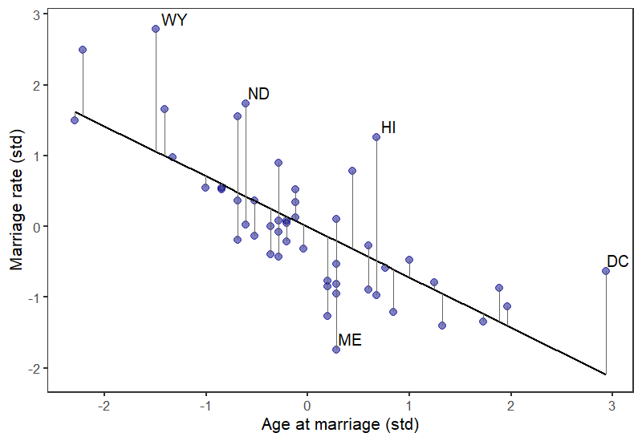
More Residual Plots
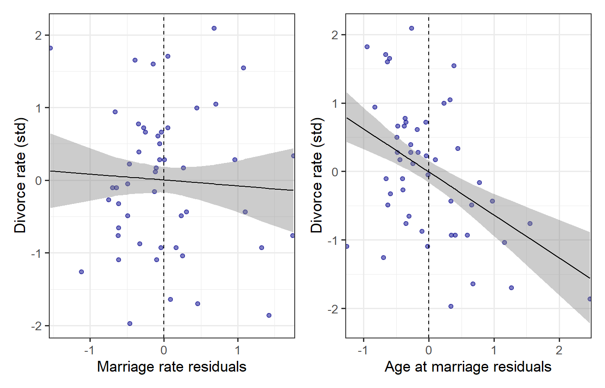
- Look for structure in the residuals.
- Is the trend line consistent with being flat?
- Marriage rate residuals?
- Age at marriage residuals?
- The error in marriage rate isn’t correlated with divorce rate, but the error in age at marriage is.
- Is the trend line consistent with being flat?
Posterior Predictive Plots
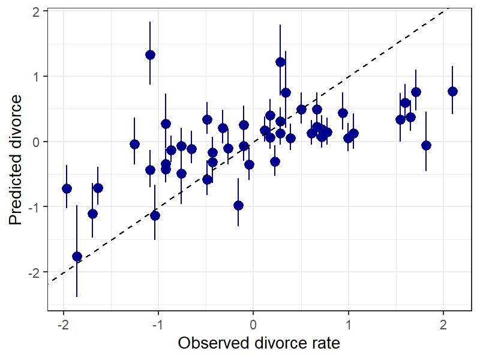
- How well does the posterior distribution match the data?
- When the model fails, how does it fail?
- Notice that I use
linpred_draws(equivalent tolink), notpredicted draws(equivalent toextract.samples)
mu <- linpred_draws(mdl_multi, select(d, D, A, M, Loc),
ndraws = 1000, value = "mu")
d2 <- mu |> ungroup() |>
summarize(mu, estimate = mean(mu),
lower = quantile(mu, 0.055),
upper = quantile(mu, 0.975),
.by = c("Loc", "D", "A", "M"))
notable_states <- c("ID", "UT", "RI", "ME")
ggplot(d2, aes(x = D, y = estimate,
ymax = upper, ymin = lower)) +
geom_pointrange(size = 1, color = "darkblue", alpha = 0.5) +
geom_text_repel(data = filter(d2, Loc %in% notable_states),
aes(label = Loc), size = 5) +
geom_abline(slope = 1, intercept = 0, color = "black",
linetype = "dashed") +
labs(x = "Observed divorce rate",
y = "Predicted divorce")